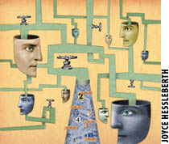
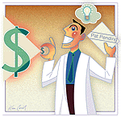
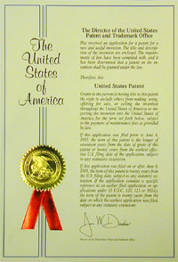
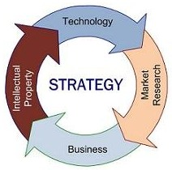

|
Kemal Yamankaradeniz
Yönetim Kurulu Baþkaný
Destek Patent A.Þ.
Eylül 2005, Ýstanbul
Not: Ýlk defa TurkCADCAM.net
Dergisi Ocak-Þubat 2006 Sayýsýnda yer almýþ bu yazý,
Eylül 2008'de TurkCADCAM.net portalýndan yayýnlanmaya baþlamýþtýr.
Rekabetin gün geçtikçe artmasý, tüketici alýþkanlýklarýnda da farklýlýk yaratýyor. Tüketici sýradanlýktan uzak, merak güdüsünü tetikleyen ve yeni donanýmlara sahip ürünlere ilgi duyuyor. Bu noktada, son yýllarda bahsedilen konularýn en önemlilerinden biri farklýlýk meydana getirerek rekabeti korumak veya rekabet üstünlüðü saðlamak oluyor. Farklýlýk oluþturmak iki þekilde olabilir. Birincisi ürünlerde, diðeri de hizmet þeklinde farklýlýk yaratmaktýr. Her iki durum için ise yapýlmasý gereken þey araþtýrma ve geliþtirme (kýsaca Ar-Ge olarak bahsedilecektir) faaliyetleri yapmaktýr.
Yenilik yaparak farklýlaþmanýn bu kadar önem taþýmasýna ve çok sýk bahsedilen bir konu olmasýna raðmen Ar-Ge faaliyetlerinin nasýl yapýlmasý gerektiði konusunda piyasada pek bilgi yoktur.
Örneðin teknik bilgilerin piyasadan nasýl elde edileceði, hangi hýzda ve düþük maliyetle elde edileceði, elde edilen bilgilerin nasýl deðerlendirileceði, bu deðerlendirmeden sonra nasýl bir strateji belirlenip Ar-Ge çalýþmalarýnýn yapýlacaðý ve nihayet elde edilen sonuçlardan nasýl katma deðer oluþturulup rekabet üstünlüðü saðlanacaðý pek de bilinen bir konu deðildir. Oysa ki, bugün ulusal ve uluslararasý pazarlarda rekabet üstünlüðünü saðlayabilmemiz ancak patent stratejilerine dayalý Ar-Ge kurarak mümkün olabilir. Çünkü, Ar-Ge uygulamalarý sonucunda ortaya çýkan buluþlarýn ulusal ve uluslararasý düzeyde korunmasý, deðerlendirilmesi ve izlenmesi hayati önem taþýyor. Aksi takdirde Ar-Ge araþtýrmalarýnýn sonuçlarýndan tam olarak yararlanmak mümkün deðil.
Patentin iki önemli iþlevi vardýr. Patent sahibine tekel hakkýnýn saðlanmasý ve bilginin kamuoyuna açýklanmasýdýr. Bir ülkede fikri sýnai haklar bilincinin artmasý, özellikle teknik konularla ilgili patent bilincinin artmasý (dünyadaki teknik bilginin %80'inin patent dokümanlarý olduðu düþünülürse) o ülkenin bilgilenmesini saðlar ve teknolojiyi takip edebilir seviyede olduðunun göstergesidir. Bu açýdan deðerlendirildiðinde eðer bir ülkede patent bilinci (kültürü) var ise, o ülkenin ekonomisine olumlu etkileri olacaðýný söyleyebiliriz.
Patent stratejilerine dayalý Ar-Ge'de, bu iþlerden sorumlu bir takým veya bir kiþi görevlendirilmelidir. Bu kiþi teknik literatürü çok iyi takip edebiliyor olacaktýr. Gerektiðinde rakiplerin ürünleri alýnacak, sökülecek ve "tersine mühendislik" uygulanacaktýr. Ýlgili konferanslar ve fuarlar ziyaret edilecek, geliþmeler izlenecektir. Bu ön çalýþmalarla piyasanýn istediði ürünler belki de piyasanýn istediðinden öte yeni ürünler yapýlacak, rakiplerden daha çabuk ve uygun þartlarda müþterilere sunulacaktýr. Ýþte yapýlan bu yenilikler ile ürünlerde farklýlaþmaya gidilecek ve rekabet korunabilecektir. Ayný þekilde hizmette de farklýlýk yapýlarak rekabet saðlanabilecektir. Aksi takdirde bugün olduðu gibi, standart Ar-Ge bölümlerine sahip sanayicilerimiz aþaðýdaki sorunlarla karþýlaþabiliyor;
a) Yeni ürün ve hizmetin geliþtirilmesi için bilgi toplama yöntemi ne kadar güvenilirdir? Acaba daha önce üzerinde kafa yorulmuþ ve piyasaya sürülmüþ veya sürülmemiþ bir konu üzerinde mi çalýþýlýyor?
b) Veri toplama yönetiminin maliyeti nedir? Tüm bilimsel dergilere, teknik dergilere, makalelere veya yayýnlara ulaþýlmakta mýdýr? Ulaþýlmakta ise bunlarýn satýn alma maliyeti nedir? Bunlar nasýl tasnif edilip sýnýflandýrýlmaktadýr? Ayrýca bunlarý incelemek için yeterli zaman var mýdýr, varsa maliyeti nedir ve yeterli midir?
c) Toplanan verilerle yapýlan çalýþmalar nasýl kayýt altýna alýnmaktadýr? Personele ne kadar güvenilir? Personelin herhangi bir sebepten dolayý bilgiyi dýþarý sýzdýrma olasýlýðý var mýdýr? Bu önlenebiliyorsa personel nasýl ödüllendirilmektedir? Personelin görevi býrakmasý durumunda beynindeki veriler nasýl alýnmaktadýr! Yapýlan iþlemler kanunlara uymakta mýdýr?
d) Tüm bu verilerin olumlu olmasý ile yeni bir katma deðer oluþturacak ürün geliþtirildiðinde veya piyasaya sürüldüðünde, rakiplerin ayný zahmeti çekmeden ve ayný maliyetlere katlanmadan ürünü veya üretim yönetimini taklit etmemesi için bir önlem alýnmakta mýdýr? Alýnan önlemler yeterli olmakta mýdýr?
e) Yapýlan çalýþmalar esnasýnda yeni geliþtirilen ürünler piyasaya sürülmeden önce test kuruluþlarýnda veya numune gönderimlerinde tedarikçi kurumlarda bilgi kaçaðýnýn önlenmesi için tedbir alýnmakta mýdýr?
f) Yapýlan yenilik bir baþka kiþi veya firmanýn patent korumasý altýnda mýdýr? Bilmeden de olsa taklit durumu söz konusu mudur?
Ýþte bu bahsedilen durumlar amatör veya profesyonel her Ar-Ge çalýþmasýnda söz konusu olabilir. Tüm bu riskleri minimum seviyeye indirmenin yolu patent stratejilerine dayalý Ar-Ge sistemidir.
Firmalar kendi bünyelerindeki Ar-Ge yapýlarýný patent üretebilecek bir yapýya dönüþtürmeleri halinde geliþtirecekleri katma deðerli ürünlerde rekabet üstünlüðü elde ederler. Ar-Ge yapýlarýnýn katma deðer üretmeye dönüþtürmesi için patent sistemine dayalý bir çalýþma metodu ile iþletilmeleri kaçýnýlmazdýr. |